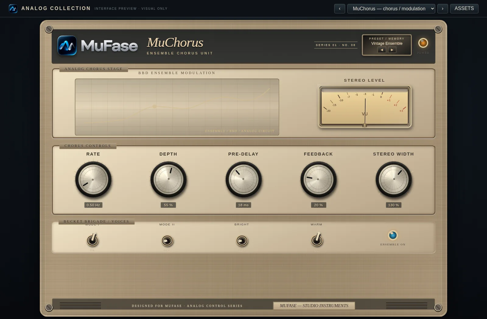

Espacio / 08 DE 15
MuChorus
Chorus — Modulación para mayor cuerpo.
Mezcla una señal con copias ligeramente retrasadas y moduladas para producir movimiento y amplitud.

¿Qué hace?
Modulación periódica de tiempo de retardo y mezcla estéreo.
Controles principales
RateVelocidad de modulación.
DepthProfundidad del movimiento.
DelaySeparación temporal de las copias.
Mix / WidthCantidad de efecto y apertura.
Aplicación habitual: Engrosar guitarras limpias, teclados, sintetizadores y voces de apoyo.